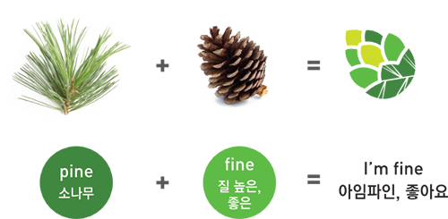
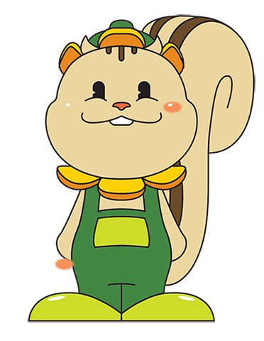

벽화갤러리
시장 곳곳에 설치 되어있는 벽화를 감상하세요.

{kind=link}
{kind=link}
{kind=link}
{kind=link}
{kind=link}
{kind=link}
{kind=link}
{kind=link}
{kind=link}
{kind=link}
{kind=link}
{kind=link}
송화벽화시장을 소개합니다.
송화벽화시장 조합장 조덕준
I’m Fine 송화벽화시장 조합장 조덕준 입니다.
송화벽화시장은 1970년대 지역주민에 의해 자연적으로 발생된 시장으로 2003년 송화골목시장상점가진흥사업 협동조합 설립과 환경개선 사업을 하였습니다.
주민과 고객님들의 많은 사랑으로 대한주부클럽과 서울시에서 2년 연속 우수시장으로 선정되었으며 산업자원부 장관표창, 대통령 포장을 수상하였고
시장을 찾아주시는 고객님들의 주차 편의를 위하여 주차시설 및 고객만족센터와 배송서비스 시스템을 갖추었습니다.
2016년도 골목형시장 육성사업에 선정되면서 우리 송화골목시장에 유명한 화가들의 작품을 천정화로 설치하게 되어 고객님들께 추억과 기억꺼리를 제공하는 I’m Fine 송화벽화시장으로 재 탄생하게 되었습니다.
또한 강서구의 미라클-메디특구 사업에 쇼핑분과로 소속되어 있어 국내외 관광객들에게 우리의 전통시장을 홍보하며 관광투어 현장으로 주변 상권을 활성화시키는데
중요한 역할을 하며 더불어 문화관광형 시장으로 선정되면 지역경제발전에 큰 힘이 될 것입니다.
송화벽화시장 상인들은 주민과 고객님들을 위해 항상 최고의 서비스와 품질로 전통시장의 정을 느끼실 수 있도록 노력하겠습니다.
다시 한번 송화벽화시장을 찾아주셔서 감사합니다.
2017. 02 송화벽화시장 조합장 조 덕준
아임파인 반찬꾸러미
장바구니 부담을 덜어드리는 꾸러미상품을 소개합니다.
주부들의 부담을 덜어드리기 위해서 꾸러미상품이 새로 출시되었어요.
매일매일 꼭 필요한 반찬!
이미 정평나있는 송화벽화시장의 맛있는 반찬들중에 미리 정해진 것 중,
2가지 혹은 4가지를 고르시면 할인된 가격으로 구매가 가능한 상품입니다.
송화벽화시장에 반찬을 사러 나오셨다면
소문이 자자한 반찬집들을 들러서 꾸러미상품을 살펴보세요.
시장이야기
도당재 샘물과 신목이야기
우장산 계곡 아래에는 동네주민들의 갈증을 씻어주는 약수터가 있었다.
우장산에서 기우제를 지낼 때 이곳 샘물을 떠서 올릴 정도로
깨끗하고 정갈한 물맛을 자랑했다고 한다.
지금도 도당재 샘물이라 불리었던 이 약수터 물로
동네 어른들이 술을 빚어 산신제를 지내고 있다.
6.25전 도당재 샘물 바로 위에 수백 년 묵은 소나무가 있었다.
마을 사람들은 이 소나무를 신령으로 여기며 소중히 섬겼다.
그러던 어느 날 비바람이 몹시 치더니 소나무가 쓰러져 버리는 것이 아닌가?
주민 한사람이 쓰러진 소나무를 보고 집에 가져다 땔감으로 썼다. (이하생략)
파이니는 쓰러진 신령스런 소나무를 살리기 위해,
전 세계를 돌아다니며 좋은 음식과 약초들을 구하러 다녔다.
파이니는 오랫동안 여러 곳을 돌아다니며 소나무를 살릴 방법을 구하였으나, 결국 찾지 못하였다.
그러던중 쉼을 청하기 위해,
우장산 인근에 있는 송화시장에 들려 음식을 먹고,
사람들을 만났는데… 이상하게도 기력이 회복됨을 느꼈다.
파이니는 송화시장에 오랫동안 머물며,
정직한 상인들과,좋은 음식을 먹고, 많은 정을 나누며 살았다고 한다.
그후, 파이니는 자신이 찾는 소나무를 살리는 영약은 먼 곳에 있지 않고,
바로 송화시장 사람들의 올바름과 정직한 음식들이었음을 깨달았다.
이후 우장산 일대에는 송화시장의 좋은 기운을 받은 곧고,
바른 소나무들이 많이 자생 했다고 한다.
송화시장의 좋은 기운들은 주변에 많은 영향을 끼쳐,
후대에는 동의보감의 허준 선생과 같은 훌륭한 의학자들이 나왔다고 한다.
사람들은 이를 기리고자 송화 축제를 열어,
많은 사람들이 송화시장의 좋은 기운을 받을 수 있도록 하였다.
지금도 시장 어디엔가는 파이니가 사람들 사이사이에 더불어 살아간다 고 하니,
이를 찾기 위한 사람들의 발길이 끊이지 않는다고 한다.
- 송화시장 CI - |
|  |
- 송화벽화시장캐릭터 파이니 - |
|  |
얼마의 시간이 지났을까?
쓰러진 소나무가 있던 자리에서 전에 못 보던 다람쥐 한 마리가 발견되었다.
사람들은 이 다람쥐를 쓰러진 소나무를 되살리고, 이를 지키는 신이라 생각하였고,
“천지자연이 만물을 생육(生育)하는 작용”을 말하는
될 화(化)와 사람 인(人)을 합해 화인(化人) 이라 불렀고,
이는 영어의 소나무를 칭하는 Pine에서도 기인한다고 한다.